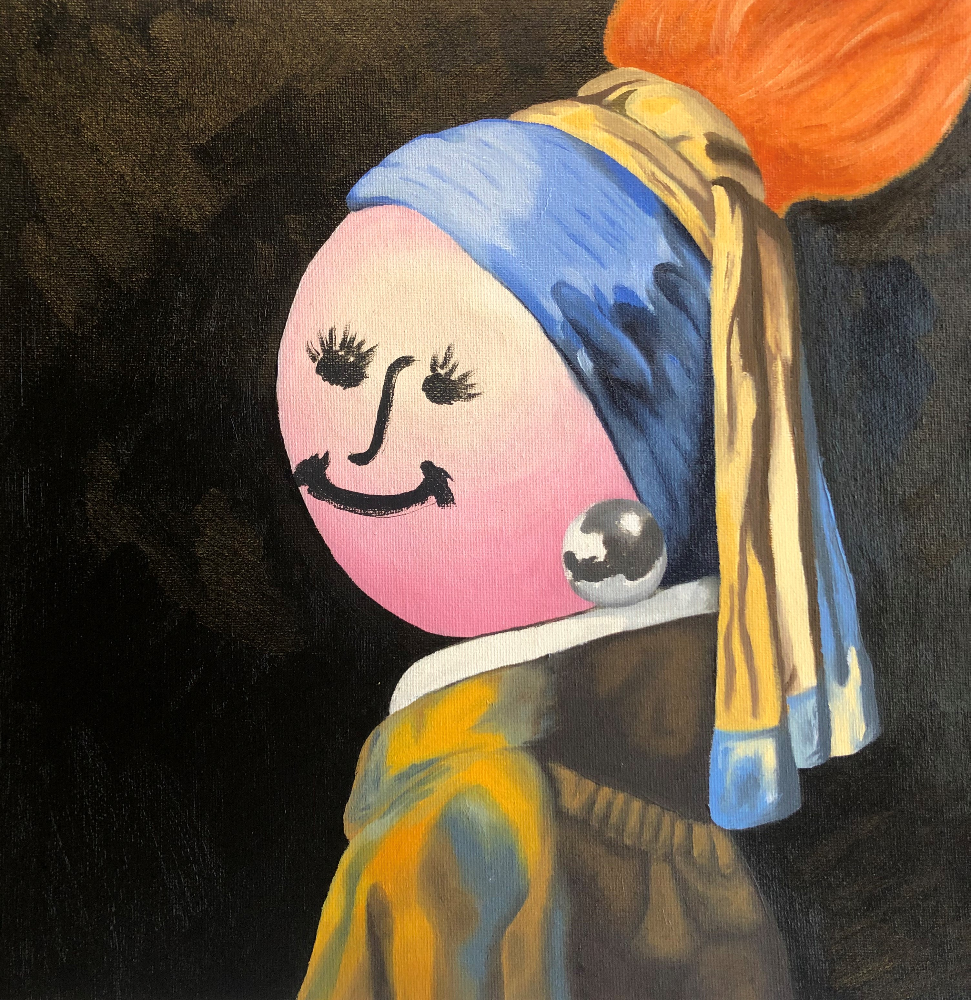
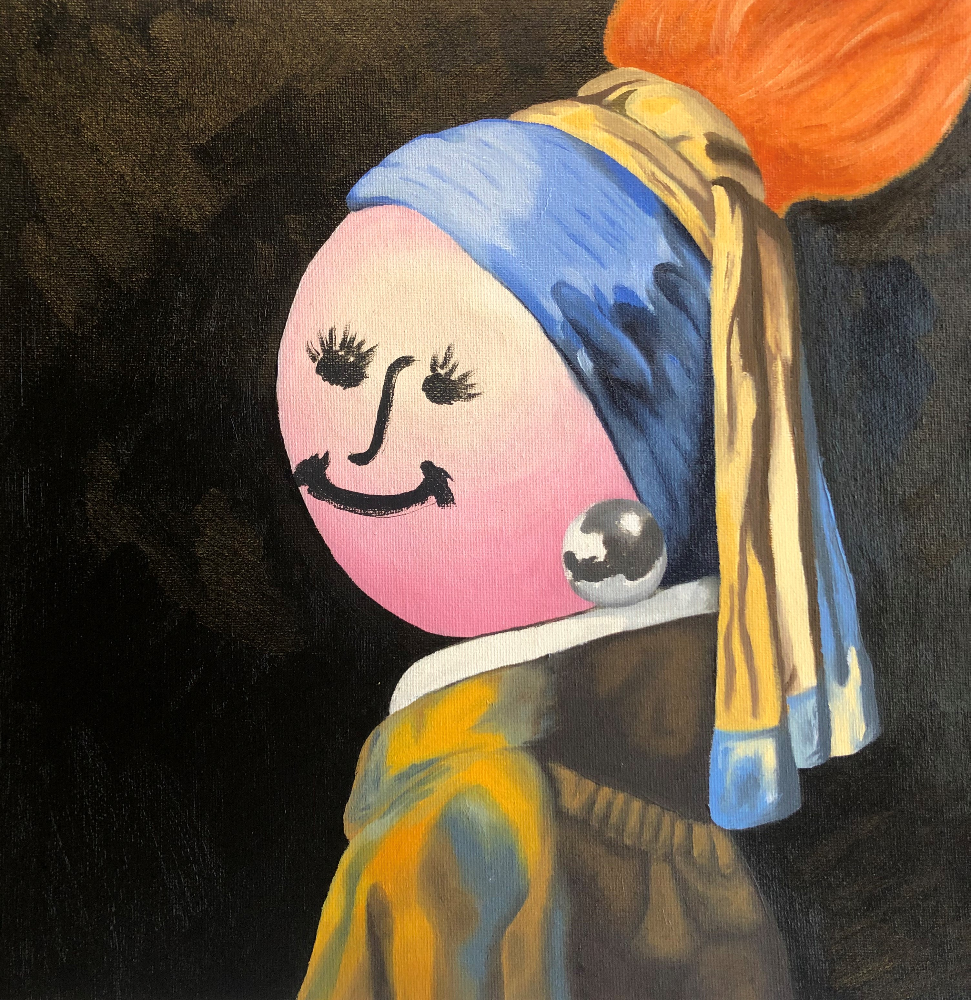

.png)
-///:-`
`-/++++++:.
.++ooooo++++``` ```
-+ooooooooo+++//-.:///:`
`./++ooooo+++++/++/+//////-
`++++oooo+++++++++/+++/////:`
`-+o+o+oo++++++/+++/:/oo+/////:
`.:ooo+o++++/++++++o+/:/oo++/////-
.-::/+++++++++++++++ooo+-/ooo++///+//
``:///////++++//++++++o+o++:/ooo+++///+/
`://///+//////++++++++ooo++++oooooo+//++/
`/++//+////+//++++oooooo++o+++ooooo++++++/`
`:/++/+//+/+++++ooooooooooooooooooooo++++++:
`./+++++//++++++++oosssoooooo+++ooooo+++++++/.
.+++++++++++++///++ossssssooo+++ooo++++++++++/`
`+o++++++++++++//+sssssoo+++++ooooo++++++++++/.
-ooo+++o+++++++/++osooo++++++ooo++/++++++++++-
/soooo+oo++++++/ooooo+++++o++++/++++++++++++:
ossoooooo+o+oo+++++o+++++oo++//++++++++++++:`
oyssosoooo++ooo+++++o++o+o++++++++++oo+oo/.
:yysssooooooooo++////+++o++++++++oooooo+:`
+yyssssooooo++++///////+++++o+oooooo+:.
`oyyssssoooo++/////////++oooooooo+/-.
`/yso+oo++oo+++/+++++ooooossoo+-`
`.:/ossyysssssoooo+++++oooossyyyys-
-:+ssssooooo+/++oo++++/////+oooyyhyy:
`:+ooosooo+++++o++//++/++////+///+o++ossy+`
-+osoooo+++o+////////++//++//++////o//+/+/oso/-
`:ooooo+++++///////++/+/////////////:/o//////++////.
:ooo++++++////////////////:::::///:/::+o/////++/:/+///.
.+ooo++////////////////://::::::::::::////////++///+///++:`
:o++++////////////////////::::::::::::::::///:///:/+////////.
`+o++++++/////////////////://:::::::::::::::::::://///+/+++//++-
`+soo+++++/////////////////:/:/::::::::::::::::::::://////++//+++-
+soo+++++++/////+/////////////:/:::::::::::/:::::::::://///////++/.
/soooo++++++//////////////////::////////////:::::::::::::////+//////.
-ssoooo++++++//////++////////////////////:/:::::::::::::::://://+++///
ossoooo++++++///+++sso+////////////////:::::::::/:::/::///://///+++///-
-yssoooo+++++++//+ssyssso++//++///++//+////:::/:/:/://////////////o++///
+ssoooo++++++++//+yyyysss+/+osoo+/o+osoo++/////////////////////////oo+/+`
sssooooo++++++++/+osyyyy+/+syo//+ossyssooo+////////////////////////+++//.
`yssoooooo++++++++oo+oooo+/oyo////syyysooo+///////////////////////////+//.
`ysssooooo+++++ossyo+++/+++ss+////+++++/////////////////////////////////+-
`ysssooooo+++++shysso+++++oyo/////+o////////////////////////////////////+.
ssssooooo+++++oyyyhyo++osso+////+sys+///////////////////////////////++++.
osssooooo++++++oosyyyyysoo++++osyyyyyo//////////////////////////////+++/
:sssooooo+++++++++++oosyssyyyyysso+oso+////////////////////////////++++:
.sssooooo+++++++++++++++++++++++/++/++////////////////////////////+++++`
/ssooooooo+++++++++++++++++++///////////////////////////////////+++++:
`osooooooo+++++++++++++++++++++/+/+///+///////////////////////+++++++`
.oooooooo+++++++++++++++++++++++//+++/+///+/+//+//////////+/+++++++.
-oooooooo+++++++++++++++++++++++/++++++++/+/+////////++++++++++++:
.oooooooo++++++++++++++++o++++++++++++++++++/+///++//++++++++++:
.oooo++o+++++++++++++++++++++++++++++++++++++//+/++++++++++++:
`/ooo+oo++++++++++++++++++++++++++++++++++++//////+++++++++:
`-+ysooo++++++++++++++++++++++++++++++++++++++//+++++++++oss+/.
`:syhhhhysooooo+++++++++++++++++++++++++++++++++++++++++++osyyyyys/-`
.syyhyhhhddhyyssoooo++++++++++++++++++++++++++++++++++ooosyyyyhyysssoo`
+yyyyyhyhhhhhhhhhyyysssoooooooooooooooooooooooooossssyyyhhhhyyyssssoso+
oyyyyyyyyyyyyyyhyyyyyhhyyyyyyyyyyyyyyyyyyyyyyyyhhhhyyyyyyyssssoooosoooo.
/yyyyyyssyyyyyyyyyyyyyssssysssssssyyyyysssssssssooooooooooooooooooooooo.
-syyyysyyyyysyyyysssssssssssooooooooossoooooo+oooooooooooooooooo+oooso/
oyyyyyssyysyyysosysssssssooosssoosoo+o+oooooooo++ooooooooooosooooooo+.
.yyyyyyyyyysssysssssyssssssssssoooo+oooossoooooooooosooosssosooosooo:
/yyyyyyyyyyyysssyyssssssoosssssssooosooossssoooossooossooooosoooss+`
`syyyyyysysysssssssyysssssssssssyo+oossssooosyooooosooosoossooosoo/
oyyyyyyyyyyyssssysssssysssssysssoosysossssoooosssssooooosssossso+
.syyyyyyyyyyyssssyssssssssysssssssossssssssssoooooooosososssoosso:
-oyyyyyyyyyysssssssssysssossssssssoossssssssoooossosoooooossooosso+`
-oyyyyyyyyysyysyssssssssssssssssssssoossssssssoooossssooooosooooooooo+-
`+syyyyyyyyysssssssssssssssssoosssssssoooossssssoooossooooooooooooooooooo/-
:yyyyysyyyyssssssssssssssssssssssssssso+ooosssoooooosooooooooooooooooooooo+:
:yyyyyyyyyssysssssssssssssssssosossoooooooosoooooooooooo+oooooooooooooooooo+
-osyyysyyssssssssssssssssssssso+ooooooooooooooooooo+++oooooooooooooooooooo+/
`/ssysssssssssssssssssssossssoooooooooooo++++ooooo++++ooo+ooooooooo+oo+++-
./ossssssssssssssssoooosssoooosoooooooo++++ooooo++o++oooo+oooosoo+++/-`
`-:+osssssssosssooooosossso++oooooooooooo+o+ooooooooo+oo+++++/:..`
`.-//++ooooosssossoooooo+++ooosoo++++++++oo++++++++++/-.
`.-::+++//+++++o+++++++++++++++o+++///::-.``
````` ```.....```